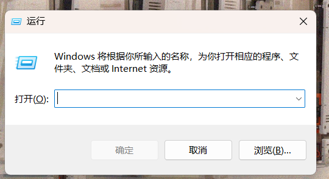
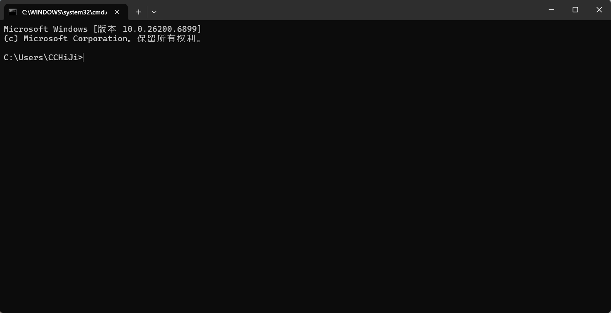
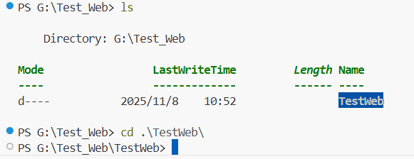
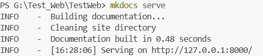
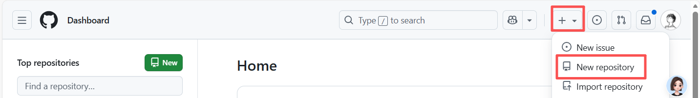
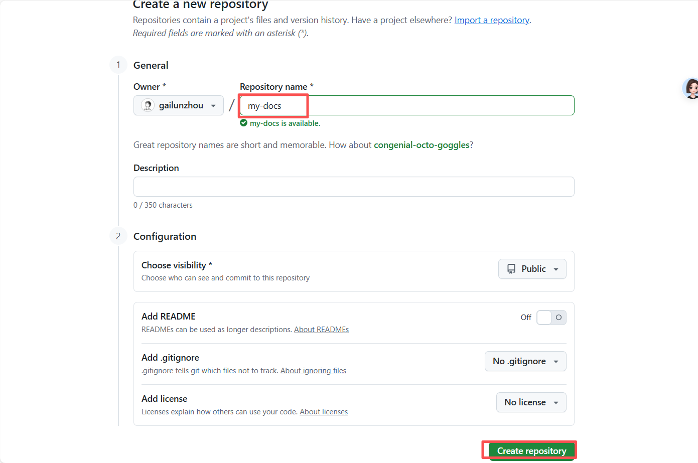
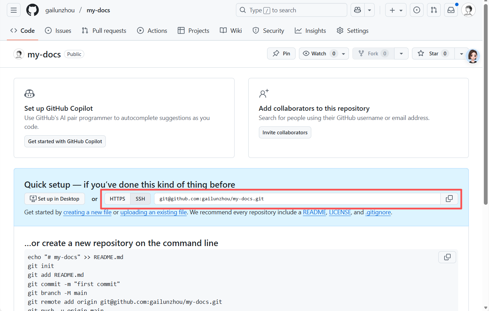
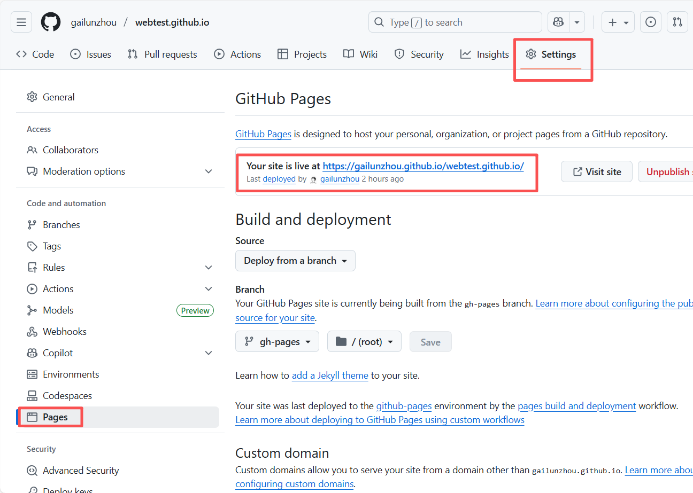

使用MkDocs搭建自己的网站
Written by : CCChiJi
前言
本教程基于MkDocs（静态网站生成工具）和 Material for MkDocs（高颜值主题），覆盖从环境搭建、项目创建到 GitHub 部署的全流程，每个步骤均附带示例代码和效果说明，帮助你快速构建专业的文档网站
推荐使用VScode编译，后文所有内容默认以VScode环境
文中提到的根目录都指文件夹下含有docs文件夹和mkdocs.yml文件的那个文件夹
环境准备：安装 MkDocs 与 Material 主题
MkDocs 基于 Python 开发，需先确保本地安装 Python（3.8+，推荐 3.10+），可打开终端通过 python --version或python3 --version验证安装。
- 按Win键+R键会弹出一个窗口

- 输入
cmd后回车即可打终端

- 查看python版本

安装MkDocs核心工具
打开终端（Windows：CMD/PowerShell；Mac/Linux：Terminal），执行以下命令：
验证安装：执行 mkdocs --version，若显示类似 mkdocs, version 1.6.0则安装成功。
安装 Material for MkDocs 主题
Material 是 MkDocs 最流行的主题，支持响应式、暗黑模式、搜索等功能
安装命令：
pip install mkdocs-material
验证主题：后续创建项目时指定主题为 material 即可生效。
创建 MkDocs + Material 项目
初始化项目
可以先在你想放置工程文件夹的位置先创建好文件夹，比如G:\Test_Web（G盘下创建一个名为Test_Web的文件夹），然后在VScode中打开这个文件夹然后打开终端
- 开启VScode中的终端

- 复制文件路径

- 使用cd跳转到对应文件夹

- 在该目录下进行创建
输入mkdocs new my-docs后回车
(其中 my-docs 是文件名称，可自定)
执行后会生成如下项目结构（后续会基于此扩展）:
my-docs/
├── docs/ # 存放 Markdown 文档（核心内容目录）
│ └── index.md # 文档首页（默认生成）
└── mkdocs.yml # MkDocs 配置文件（主题、导航等都在这里设置）
配置 Material 主题
打开项目根目录的 mkdocs.yml 文件（用 VS Code、Notepad++ 等编辑器），添加以下配置（覆盖默认内容），指定 Material 主题并启用基础功能:
site_name: 我的 MkDocs 文档 # 网站名称（显示在导航栏顶部）
theme: #主题
name: material #指定的主题
icon:
logo: material/cat
language: zh #界面语言
features: #启用material特色功能
- navigation.sections
- navigation.instant
- navigation.top #返回顶部按钮
- navigation.tabs #顶部导航标签页
- navigation.expand #让分组默认展开
- navigation.sections #侧边栏分组折叠
- search.suggest #搜索建议
- search.highlight #搜索结果高亮
- content.tabs.link #内容标签页支持锚点
palette: #配色方案（支持自动切换暗黑/亮色）
- media: "(prefers-color-scheme: light)" #亮色模式
scheme: default
primary: blue #主色调
accent: orange #强调色 橙色
- media: "(prefers-color-scheme: dark)" #暗黑模式
scheme: slate
primary: blue #主题色
accent: cyan #强调色 青色
nav: #网站导航结构（侧边栏和顶部标签页的内容）
- 首页: index.md # 导航项名称 -> 对应docs目录下的Markdown文件
markdown_extensions: #扩展项
copyright: CopyRight @ your name or your company name #版权
可参考我的配置，扩展项部分可直接复制
site_name: Lab512 Docs
theme:
name: material #指定的主题
icon:
logo: material/cat
language: zh #界面语言
features: #启用material特色功能
- navigation.sections
- navigation.instant
- navigation.top #返回顶部按钮
- navigation.tabs #顶部导航标签页
- navigation.expand #让分组默认展开
- navigation.sections #侧边栏分组折叠
- search.suggest #搜索建议
- search.highlight #搜索结果高亮
- content.tabs.link #内容标签页支持锚点
palette: #配色方案（支持自动切换暗黑/亮色）
- media: "(prefers-color-scheme: light)" #亮色模式
scheme: default
primary: blue #主色调
accent: orange #强调色 橙色
- media: "(prefers-color-scheme: dark)" #暗黑模式
scheme: slate
primary: blue #主题色
accent: cyan #强调色 青色
nav: #网站导航结构（侧边栏和顶部标签页的内容）
- 首页: index.md # 导航项名称 -> 对应docs目录下的Markdown文件
- 基础指南:
- 创建和更新网站: createweb.md
- Markdown 语法: markdown-syntax.md
- 外部资源:
- MkDocs 官网: https://mkdocs.org
- Material 文档: https://squidfunk.github.io/mkdocs-material/
markdown_extensions: #扩展项
- admonition # 新增：启用提示框扩展
- pymdownx.tabbed: # 启用内容标签页扩展
alternate_style: true # 可选：启用交替样式（视觉更美观）
- pymdownx.tasklist:
custom_checkbox: true
clickable_checkbox: true
- pymdownx.highlight: # 启用代码高亮核心扩展
anchor_linenums: true # 可选：为代码行添加锚点（便于跳转）
- pymdownx.superfences: # 支持嵌套代码块、自定义格式等高级功能
copyright: CopyRight @ 2025-11-6 TJCU CCChiJi All Rights Reserved
启动本地预览服务器
- 终端跳转到项目根目录

ls是列出文件内的所有内容
你的那里应该是显示的my-docs ,我的改了名字 ,知道是哪个即可
- 输入
cd后加一个空格，然后输入文件夹名的第一个字母再按Tab键会自动补齐，然后回车就可以跳转到对应文件夹内

- 执行
mkdocs serve命令即可启动实时本地预览服务器

此时你的终端应该会一直保持上图样子，点击一下终端页面键盘按下Ctrl+C即可关闭运行，使用终端
部署到 GitHub Pages
完成文档编写后，将网站部署到 GitHub，实现公开访问
准备 GitHub 仓库
- 登录 GitHub，创建一个公开仓库（仓库名建议与本地项目名一致，假设你的文件夹名称还是my-docs）

- 写入名字后直接点create repository即可

- 复制仓库的 HTTPS 地址或SSH地址（如 https://github.com/your-username/my-docs.git （HTTPS地址））

本地项目关联 GitHub 仓库
在本地项目根目录（假设你的文件夹名称还是my-docs）执行以下命令（一条一条执行，地址需要替换为你的仓库地址）:
# 初始化 Git 仓库（若未初始化）
git init
# 添加所有文件到暂存区
git add .
# 提交文件（备注信息可自定义）
git commit -m "初始化 MkDocs + Material 项目"
# 关联 GitHub 仓库(origin后就是你仓库的地址)
git remote add origin https://github.com/your-username/my-docs.git
# 推送到 GitHub 主分支（main 或 master，根据 GitHub 默认分支调整）
git push -u origin main
（补充：如何更改分支）
-
切换到对应分支(以切换到main为例)
该方法是直接切换 -
重命名分支(假设现在在master分支下)
branch -m是重命名分支命令
部署网站到 GitHub Pages
执行 MkDocs 提供的一键部署命令，自动构建静态页面并推送到gh-pages分支
终端显示 INFO - Successfully deployed to GitHub Pages 即部署成功
访问部署后的网站
- 打开 GitHub 仓库 → 点击顶部 Settings → 左侧 Pages
- 查看 “GitHub Pages” 下的网址（如 https://your-username.github.io/my-docs/），等待 1-5 分钟（GitHub 需同步）
- 打开该网址，即可看到你的 MkDocs 文档网站

更新网站内容
后续修改文档或配置后，按以下步骤更新
- 修改内容：编辑 docs 下的 Markdown 文件 （即后缀为.md的文件） 或 mkdocs.yml
- 提交更新到 GitHub 主分支
在VScode中打开项目并开启终端位于根目录
- 重新部署到GitHub Pages 等待几分钟，刷新网站即可看到更新